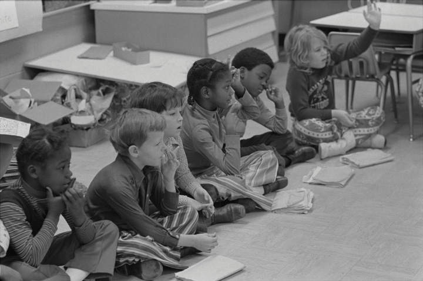
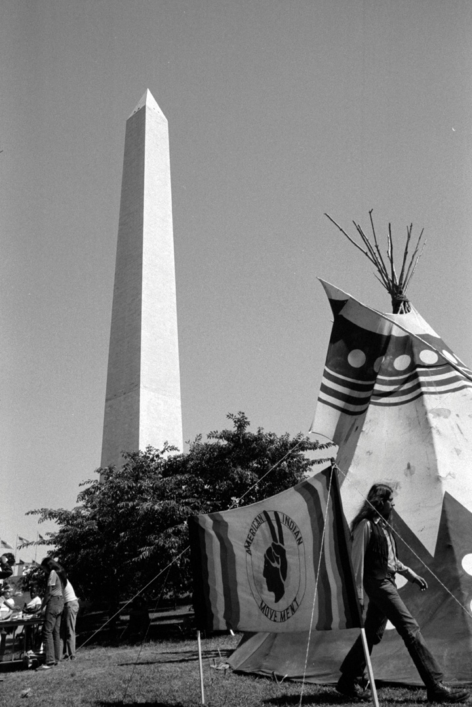
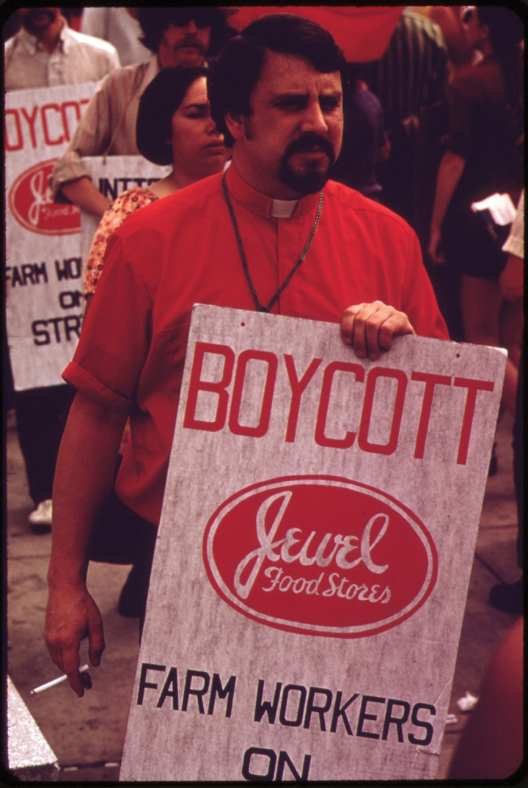

The late 1960s was the high tide of the civil rights movement. Many historians also believe the period was the zenith of America’s support for greater educational and economic opportunities for African Americans and other minorities. Liberal groups had proliferated in the United States throughout the 1960s, leading to the emergence of greater rights consciousness among African Americans, women, the poor, Native Americans, Latinos, and other groups. However, by the early 1970s, many whites feared that the rising condition of minorities might threaten their own tenuous status. Whites began to display their own theories of rights consciousness that argued that affirmative action and busing violated their civil rights.
Also by the early 1970s, radical groups such as the Students for a Democratic Society (SDS) had self-destructed, mainstream civil rights groups like the National Association for the Advancement of Colored People (NAACP) were mired in hundreds of complicated and expensive court cases, and the once-mighty Student Nonviolent Coordinating Committee (SNCC) was descending into fratricidal conflict. By 1972, SNCC had ceased to exist as an interracial civil rights organization as its leaders chose black nationalism over interracial activism. Meanwhile, existing Black Nationalist groups such as the Black Panthers faced both internal and external pressures. The Panthers sought to balance community service with militancy, while simultaneously fending off the FBI’s attempts to destroy their organization. As these institutions struggled to remake civil rights in a post–Jim Crow world, the drama of nonviolent mass resistance was replaced by the technicalities of documenting housing and employment discrimination. What was once a matter of simple justice—eliminating laws requiring segregation and white-only hiring policies—had now become a complex issue involving school redistricting and affirmative action. For many, promise of the 1960s receded into logistical details regarding school desegregation and the tangled the roots of economic inequality.
Chief among these logistical challenges was the question of how to achieve racial balance in neighborhood schools when most cities remained racially segregated. Many districts had implemented “freedom of choice plans” that permitted or encouraged black and white parents to send their children to schools where they would be in the minority. Few parents took advantage of these voluntary plans, and the courts decided that something more than voluntary participation would be required to achieve racial balance. Beginning in the late 1960s, urban school districts began reassigning children from minority neighborhoods to school districts with large white majorities. White children were also sent to predominantly nonwhite schools, although this rarely occurred in equal numbers.
Given the need to transport large numbers of children beyond their own communities, this strategy of achieving racial balance became known as “busingThe transportation of children to schools beyond their own neighborhood with the goal of achieving racial balance in schools despite the existence of racial imbalance in communities..” Mandatory busing upset many parents on both sides of the racial divide due to the inconvenience it imposed on parents and students. Busing was especially burdensome on large families in inner cities who often found that their children were now attending several different schools throughout the city. Others were upset that busing was destroying the connection between schools and neighborhoods.
Black parents pointed out that these plans were often not implemented equally across the color line. Black parents complained their children usually were the ones who had to wake up hours early each day. Others questioned whether such sacrifice was worth the “privilege” of attending a school outside of one’s community where students were often subject to racial prejudice. White parents in working-class urban neighborhoods also questioned the arrangement, pointing out that in the few cases when white children were assigned to inner-city schools, their children rather than wealthy suburban whites were the ones selected.
Defenders of busing recognized these shortcomings and asked critics to come up with alternatives. Short of mandating racial balance in neighborhoods and requiring families to change residences, busing seemed the most practical solution to the persistence of racial segregation in schools. Busing also had many positive attributes, as oral histories of children who participated in these plans often reveal. For example, an administrator who grew up in the predominantly black community of North Omaha recalled that a busing plan in her community led to her first friendships with other white children. Other residents pointed out that busing also connected black and white parents, who would have been unlikely to meet one another had it not been for busing. At the same time, most oral histories reveal that these friendships were usually superficial and schoolchildren rarely spent time at the homes of their new friends.
Charlotte, North Carolina, was even more racially segregated than Omaha, although the pattern of racial segregation that concentrated most of the black population near the center of the city was not unlike that of North Omaha. In Charlotte, children attended schools that were legally open to all races but were still racially segregated in practice—a pattern known as de facto segregationIn contrast to de jure segregation (segregation by law), de facto segregation refers to the continued separation of races and ethnicities regardless of laws that are racially neutral. Because of these factors and the persistence of segregated neighborhoods, advocates of school integration believed that it was not enough to simply outlaw segregation.. Members of Charlotte’s black community sued the school board in 1970, demonstrating that the schools were nearly as segregated as they had been twenty years prior. In response, school officials devised a plan that redrew the city’s high school districts to achieve racial balance. The new plan cut the city like a pie, with students in the predominantly black center being assigned to schools throughout the city.
This plan put the burden of desegregation on black students who now had to travel great distances to outlying schools, yet the chief opposition came from white parents. These whites formed their own organization to oppose what they believed was a violation of their civil rights. By 1971 when the US Supreme Court agreed to hear Swann v. Charlotte-Mecklenburg Board of Education, the case centered on the question of whether busing was a legal method to achieve desegregation. The Supreme Court decided that in some cases, busing might be the only method to achieve the desegregation required by Brown v. Board. The Charlotte case resulted in dozens of lawsuits and the creation of mandating busing plans in cities throughout the United States. For a time, it appeared that legal toleration of de facto segregation had been replaced by a mandate to reverse the last vestiges of segregation, even if it meant transporting children all over America’s cities. However, just three years later, a second US Supreme Court decision limited the ways busing might be used in large cities.
One of the many cities that instituted busing plans in the wake of the Swann case was the northern metropolis of Detroit. Decades of white flight resulted in predominantly white suburbs, while most children who lived within the city limits of Detroit were black. After black plaintiffs won a lower court decision in Milliken v. BradleyA 1974 Supreme Court decision that forbade schools from busing students across school district lines to achieve racial balance unless it could be proven that those lines were intentionally drawn to segregate schools in violation of Brown v. Board. The decision rendered busing to achieve racial balance in many urban areas., school officials created an elaborate system that transferred children throughout dozens of school districts within the greater Detroit metropolitan area to achieve racial balance. Affluent whites in suburban communities such as Grosse Point were outraged that their children were being forced to attend urban schools in predominantly black neighborhoods. Other whites in working-class neighborhoods just across the city limit candidly admitted that one of the major reasons they moved was to ensure that their children would not be assigned to the Detroit city schools.
The Milliken case reached the Supreme Court in 1974 and resulted in a controversial 5–4 decision barring the use of busing across district lines, unless it could be proven that those lines had been intentionally drawn to segregate students in the first place. In Detroit, school district lines simply corresponded with the many different independent cities that together made up the Detroit metropolitan area. As a result, the city of Detroit once again became its own school district and the only legal remedy to the resulting de facto segregation became a much smaller busing plan that utilized school districts that were just outside the city limits. Because schools are largely funded by local property taxes, the Milliken decision was particularly damaging to those who hoped to equalize school funding between suburbs and the increasingly impoverished school districts of inner cities. The decision also reversed busing in many metropolitan areas and confirmed white flight as a method to legally thwart school integration.
Figure 12.15
School officials in Charlotte, North Carolina, were able to increase racial diversity in classrooms by transporting children to schools beyond their own neighborhood. This photo was taken in 1973, two years after the Supreme Court upheld the practice of busing children to achieve racial balance in Swann v. Charlotte-Mecklenburg Board of Education.
By 1970, urban black voters were often registered in equal or greater numbers than the nationwide average. White flight and black voter registration led to hundreds of black candidates winning election to city offices, and many of America’s largest cities elected African American mayors. Many white residents who remained in these cities did so by choice and worked alongside their black neighbors to counter the effects of white flight.
Other whites viewed the rise of black political leaders and busing as an assault on their neighborhoods and their way of life. In Boston, one such group took the name Restore Our Alienated Rights (ROAR) and campaigned to end the “forced busing” of black students into “their” neighborhoods. Most ROAR members insisted they were not racists, a position at least partially supported by some of the arguments made by their more moderate supporters. For example, some ROAR members indicated that they would support busing if plans to achieve racial balance included the wealthy suburbs rather than only the white working-class areas of South Boston.
The actions of many ROAR members reduced the credibility of this message, however, as ROAR rallies often disintegrated into obscenities and violence. In the summer of 1975, ROAR members stoned buses containing black children on their way to predominantly white schools, set fire to symbols of desegregation, and even attacked black children and passersby. The antibusing riots in Boston, Philadelphia, and other cities that summer were often cited as proof that Northerners were no less racist than Southern whites. Other whites joined peaceful counterprotests attended by various racial and ethnic groups that supported busing or at least hoped to find alternative methods to ensure racial diversity in schools. These peaceful counterprotests attracted far more participants in Boston and elsewhere but failed to produce the headlines or notoriety of ROAR. Most whites across the nation expressed disapproval of busing, and the electoral strategies of local and national politicians catered to antibusing sentiment by promising its abolition. Without the support of the US Supreme Court, busing plans were quietly reduced or suspended in most cities by the late 1970s.
The civil rights movement demonstrated that there was no singular African American experience or perspective. It also showed that black Americans, like all Americans, were divided by social class. The post–civil rights movement witnessed the extension of this gulf as the black middle class expanded to include more families, while those in poverty languished even further behind. Equality of access to universities and the reduction of employment barriers in business, education, and the professions led to an expansion of the black middle and upper class well beyond the “talented tenth” W. E. B. Du Bois had lauded in the early twentieth century. Whereas only 13 percent of black families earned enough to be considered middle or upper class in 1960, this percentage tripled to include one-third of black families by the 1970s. Equally impressive, by the mid-1970s, more than a million African Americans were enrolled in universities. This represented a 500 percent increase from two decades prior and indicated that blacks and whites were now attending college in roughly the same proportion. Whereas black college graduates found that their degrees mattered little among white employers in the past, this new generation of black graduates found fewer obstacles. For some, new regulations encouraged racial diversity and guaranteed that their applications were given serious consideration in government jobs and large corporations for the first time.
There were four main reasons for this sudden change of heart among predominantly white employers in government and corporate America. The most important was a belated recognition that racial discrimination was contrary to the interests of a particular firm or agency because it robbed that organization of some of the best and brightest applicants. The second was a likewise delayed recognition that a diverse workforce encouraged new perspectives and fostered a positive work environment. The third reason was the negative consequences that companies, which refused to hire black employees, faced given the growing power of black consumers.
The fourth reason for the growth of minority employment was the development of a new remedy intended to proactively counter patterns of historic discrimination. This solution was called affirmative actionPositive steps to increase the number and percentage of minorities and women in employment, education, and other fields where they have been historically discriminated against and underrepresented. Affirmative action plans may include recruitment of minority candidates or more controversial measures that give preference to women and minority candidates. and was implemented by government agencies and a handful of private companies. Supporters of affirmative action recognized that it would not be enough to simply order an end to overt policies that discriminated against minority applicants in the past. Instead, employers must actively recruit minority candidates and consider diversity as a positive attribute when making employment decisions. Hailed by some as the only way to reverse previous behavior, affirmative action was also criticized as reverse discrimination. This backlash against affirmative action was especially aroused when a handful of agencies and universities set apart a number of slots for minority employees or students.
Universities and other organizations that established minimum quotas for minority employment believed such policies were needed to quickly reverse their own historic patterns of discrimination. Supporters of these plans cited statistics and other measures that highlighted the egregious discrimination that had happened in the past and believed that something more than a promise to start taking minority candidates seriously was needed. For example, city police and fire departments in cities with large black populations usually employed only a handful of black firefighters and police among hundreds of whites. White applicants at these departments enjoyed an unfair advantage, advocates of affirmative action pointed out, in that they were often the friends and family of existing members. In addition, without a policy of affirmative action well-qualified minorities might not apply, given the historic injustices practiced by departments in the past. By this perspective, affirmative action leveled the playing field and minimum quotas ensured that a department must employ minority firefighters and police in numbers that were representative of the city’s racial demographics. However, from the perspective of a white applicant who was denied employment, affirmative action might have kept them from obtaining a job. In many other cases, the perception that affirmative action might be to blame created a scapegoat that took on a life of its own.
Due to the difficulties of proving whether a white candidate had been rejected because of affirmative action, the nation’s attention focused on a handful of cases involving standardized tests where whites with higher scores were still denied employment or admission to a college. In the mid-1970s, a white applicant who was denied admission to the medical school of the University of California Davis sued the college for racial discrimination. A Vietnam veteran with outstanding credentials, Allan Bakke had slightly higher grades and standardized test scores than a few minority applicants. These individuals were admitted as part of a special program to increase diversity by setting aside sixteen places for minority students within each incoming class. The Supreme Court decided Regents of the University of California v. BakkeA landmark Supreme Court decision in 1978 that barred the use of quotas that set aside a certain number of places for minority candidates. The court’s complicated split decision supported the continuation of affirmative action plans but believed that government-sponsored racial quotas violated the Civil Rights Act of 1964. in June 1978. The Supreme Court issued a complicated and split decision that declared racial quotas were legal only in extreme cases. The school was also ordered to admit Mr. Bakke. Similar cases throughout the next decades would reflect the conflict between a color-blind approach and strategies of correcting historic injustices and the persistence of racism without violating the principles of fairness.
Affirmative action affected only a minute fraction of the hundreds of millions of decisions regarding admissions and employment around the country. Yet for many whites, affirmative action came to symbolize a host of frustrations associated with the perception of relative decline that permeated nearly every aspect of life in the 1970s. No one recognized this more than the politically savvy Richard Nixon. Throughout his career, Nixon occasionally took unpopular stands in defense of civil rights. However, by 1972, Nixon’s campaign engineered something it called the Southern StrategyAn electoral strategy of Richard Nixon to exploit the racism of white voters without explicitly supporting white supremacy. Nixon used this strategy to turn the formerly Democratic states of the South to the Republican Party by appealing to state’s rights ideas that had been used in the past to support segregation laws, speaking out against affirmative action and busing, and presenting the Democratic Party as the party of liberals and urban blacks.—an attempt to win the states that had voted for the archsegregationist George Wallace in the last presidential election. Nixon’s opposition to busing and affirmative action was part of the strategy and contributed to his electoral victory in Southern states. That the Republican Nixon prevailed throughout the South signified a historic political realignment considering that Southern whites had been voting the Democratic ticket since before the Civil War.
At times, Nixon was able to appeal to white voters while posing as a moderate. “There are those who want instant integration and those who want segregation forever,” candidate Nixon exclaimed in a speech expressing his opposition to busing. “I believe we need to have a middle course between those two extremes.” However, at other times during his presidency, Richard Nixon made common cause with those who sought to reverse the civil rights movement. For example, Nixon attempted to block the extension of the 1965 Voting Rights Act. Because Nixon knew that Congress would extend the act over his veto, he deliberately chose this symbolic action to win the votes of white Southerners who had opposed the Voting Rights Act under the guise of state’s rights.
Nixon recognized that his Southern Strategy risked solidifying the drift of black voters away from the Republican Party. However, he also recognized that sacrificing the black vote was a politically savvy move in the 1972 presidential election due to the winner-take-all system of the Electoral College and the unlikelihood that black voters would pull the lever for Nixon over the liberal George McGovern. Nixon’s Southern Strategy led to the portrayal of the Democratic Party as the party of liberals and minorities in the minds of Southerners and many conservatives throughout the nation. The state’s rights message of the Nixon campaign was more subtle when it came to race than the rhetoric of archsegregationists such as George Wallace. However, the Southern Strategy had the same effect of further dividing electoral politics along racial lines both within the South and around the nation.
Figure 12.16
Members of the American Indian Movement (AIM) held protests throughout the nation, including sit-ins at the headquarters of the Bureau of Indian Affairs in Washington, DC.
In 1972, American Indian Movement (AIM) leader Russell Means organized a protest called the Trail of Broken Treaties. Means sought to publicize and protest the long history of the federal government’s dishonest dealings with Native American tribes. Chief among the group’s demands was the return of more than 100 million acres of land. AIM activists also demanded the elimination of the Bureau of Indian Affairs, presenting evidence they believed demonstrated over a century of fraud and paternalistic mismanagement.
AIM made headlines later in the year when they held a sit-in at the Bureau of Indian Affairs in Washington, DC. The protesters argued that the bureau had pursued a strategy of token payments to Native Americans for over a century. This strategy permitted the government to appear generous, they argued, but never fully compensated Native tribes for the loss of their land in a way that could lead to independence and self-sufficiency. The small welfare payouts also reduced the likelihood that significant investments would be made in tribal educational and vocational programs. These token payments did little to address the issues that had been caused by hundreds of years of oppression, the protesters argued. In response, AIM called on the government to invest the kinds of resources that would lead to tribal autonomy though educational and economic development programs that would be managed by tribal members themselves.
The sit-ins brought attention to the fact that Native American schools were underfunded and graduates of these schools had few job opportunities. For this reason, the protesters explained, over three-fourths of children dropped out of reservation schools. Natives also protested their exclusion from traditional fishing and hunting grounds by holding “fish-ins” where tribal members “trespassed” onto federal lands to protest the seizure of tribal lands. Members of AIM also followed the example of the Black Panthers by organizing neighborhood patrols aimed at reducing crime and preventing police brutality. Perhaps the most obvious symbol of the connection between the members of AIM and the Panthers was the adoption of the rallying cry of “Red Power” and the wearing of red berets. As the name AIM implies, these activists also began to refer to one another as “Indians,” embracing a term they believed relayed the unique historical experience of tribal members.
AIM activists protested against discrimination against Native Americans by law enforcement officers. When a white man convicted of killing a Sioux Indian received a light sentence, two hundred Sioux Indians took eleven hostages and seized a church in the small town of Wounded Knee, South Dakota. The planners of the Siege at Wounded KneeA 1973 protest by armed members of the American Indian Movement. AIM members seized hostages near the site of the famous 1890 massacre of Sioux Indians by federal troops. AIM demanded an end to what they believed was harassment of their members, self-determination for the Lakota Sioux, and control of all the lands they believed had been granted to the tribe by previous treaties. selected this location to remind Americans of the 1890 massacre that had occurred nearby. Millions of Americans were familiar with the 1890 massacre due to the 1970 bestseller Bury My Heart at Wounded Knee by historian Dee Brown. The contrast between the single-shot rifles of the protesters and the automatic weapons of federal marshals and the FBI who surrounded the church rekindled images of the artillery and Gatling guns used by federal forces in 1890. The siege itself led to a seventy-one-day standoff between AIM activists and federal agents. With supplies dwindling, other AIM leaders attempted to resupply their fellow protesters. The FBI intervened, which led to a shootout that injured many on both sides and claimed the lives of one of the AIM members.
In June 1975, a similar shootout occurred at the Pine Ridge Reservation in South Dakota where one Native American and two federal agents were killed. Armed confrontations did little to improve the conditions on reservations and soon led to divisions among Native American activists. Similar to the conflict among the members of the Students for a Democratic Society, SNCC, and other groups, members of the AIM were divided on the question of whether these more aggressive models of self-defense might be counterproductive. In addition, AIM leaders faced the same FBI harassment that had been used against black activists. Between the internal conflicts and outside pressure, AIM soon mirrored the disintegration of SDS and SNCC.
While the armed struggles of AIM activists drew headlines, more subtle protest measures brought positive results for tribal members. Native American leaders went to libraries and archives, chronicling treaty violations of the federal government dating back to the eighteenth century. From Maine to Alaska, native tribes won a variety of court settlements in the 1970s that provided both financial compensation as well as guarantees of legal autonomy. For example, the Taos Indians regained control of nearly 50,000 acres in New Mexico. The settlement included sacred sites such as Blue Lake, which had been seized by the federal government at the turn of the century. Natives also appealed to Congress, leading to the passage of the Indian Self-Determination and Educational Assistance ActReversed previous government policies and strategies aimed at terminating recognition of Native American tribes. Termination was replaced by the goal of self-determination regarding the affairs and government of native tribes. For example, federal funds for education guaranteed by previous treaties and agreements would now be under the control of native tribes to administer as they saw fit. in 1975. The new law guaranteed that tribes would be able to determine how to spend federal aid as well as administer their own educational programs. The law also gave tribes authority to determine how natural resources on tribal lands would be utilized—an important reform given the large coal, lumber, and oil and gas reserves on many reservations.
Figure 12.17
This protest in Chicago was held in support of migrant farm workers. Consumers around the country boycotted certain producers and stores that refused to negotiate with representatives of the United Farm Workers.
In the mid-1960s, Mexican American activists marched hundreds of miles from the Rio Grande Valley to the Texas state capital of Austin. Similar to the protest marches of African Americans to the state capitals of Mississippi and Alabama, these activists demanded equality. They also demanded that their history and culture be included in college and public school curriculum. The college that is now California State University, Northridge, was the first major university to offer a course on Mexican American history in 1966. Throughout the late 1960s and 1970s, minority students attended college in larger numbers, and their demands for similar courses became essential to those colleges and universities of the Southwest. Students and faculty held teach-ins and began to refer to themselves as Chicanos and Chicanas—labels that predated the formation of the United States and reflected one’s pride in their Mexican heritage. The following year Chicano students held protests calling for these informal history and culture courses to become part of the official curriculum in high schools and colleges. Other students joined organizations such as the Mexican American Youth Organization (MAYO), which operated chapters at high schools and colleges.
Chicano students at San Francisco State and Texas State College in San Marcos held protests and threatened to withdraw their tuition if more courses on the history and culture of Chicanos were not included. Students at San Jose State held their own commencement ceremony in protest of the lack of inclusion they faced. Students at the newly created Colorado College of Opportunity (today Metropolitan State College of Denver) may have been the most successful in convincing administrators to respond to their demands. Construction of the college displaced a number of Mexican American families in the neighborhood of Aurora where it was built. In response, the founders of the college had pledged to serve the needs of the local Mexican American community. As a result, administrators were especially compelled to respond to the demands of Chicano students at Metropolitan State, who were also a sizable portion of the student body. Puerto Rican students likewise held a strike against City College in New York in 1969 until administrators agreed to create an ethnic studies program. The result of these protests was that hundreds of colleges created similar programs throughout the country.
The most dramatic manifestation of the Chicano movement was a series of antiwar protests organized by the Chicano MoratoriumAn organization that connected Chicano activism with the antiwar movement by raising awareness about the disproportionate number of casualties among Chicano and other nonwhite soldiers. The most famous act of the Chicano Moratorium was a march and mass protest in East Los Angeles in 1970.. Chicano men were disproportionately drafted into the armed services during the Vietnam War. They were also disproportionality assigned to infantry units where they died in disproportionately high numbers. Accounting for only 10 percent of the nation’s population during these years, Mexican American soldiers accounted for 20 percent of US combat deaths in Vietnam.
An estimated 20,000 to 30,000 people, many wearing the signature brown berets of the Chicano movement, participated in a protest march and meeting in Los Angeles in August 1970. Although this and the dozens of previous antiwar protests launched by the Chicano Moratorium were peaceful, police in Los Angeles used a robbery at a nearby liquor store as a pretext to send hundreds of officers into the crowd. Officially searching for the liquor store bandit, police used clubs and tear gas against those who had been celebrating the morning’s march with a concert. The scene quickly disintegrated into violence, and hundreds were injured as helicopters dropped teargas on participants and police alike. A peaceful gathering that had been part celebration and part protest soon turned into a riot when three activists were killed by police. Among the victims was journalist Ruben Salazar who was beloved in the Chicano community for his fearless reports on police violence. Although officials ruled his death an accident, the fact that he died after being hit in the head by a teargas canister while seated at a table led many Chicanos to believe that the police had intentionally targeted Salazar.
The year 1970 was also when activists formed La Raza UnidaAn independent political party formed in 1970 that seeks to represent issues important to Latino through the electoral process., a political party that sought to represent the growing number of Mexican American voters. The group won few elections in its formative years but succeeded in registering tens of thousands of new voters. La Raza also worked with attorneys who used the legal system to overturn practices such as gerrymandering that had discouraged Mexican Americans from voting in the first place.
Other activists used the courts to challenge the continued segregation of Mexican American schoolchildren following their 1970 victory in Cisneros v. Corpus Christi Independent School District. Texas schools had long classified students as either white or black, a system that segregationists had cited in claiming that the city’s separate schools for white students and Mexican American students were not actually segregated. After all, the segregationists argued, almost all the students enrolled were either “white” or “other white” according to the official statistics, so how could there be racial discrimination? The court agreed with plaintiffs that Mexican Americans were an identifiable minority and that segregation of these students violated the US Supreme Court’s ruling against segregation in Brown v. Board.
It was also the year 1970 that Dolores HuertaCofounder of the United Farm Workers, Huerta was an educator and community leader who joined forces with Cesar Chavez to organize farm laborers and advocate their causes to federal and state governments. Huerta directed the successful nationwide boycott of grapes that forced California growers to recognize the UFW., Cesar Chavez, and the United Farm Workers (UFW) secured their first contracts with California grape producers. Contracts between landowners and agricultural laborers were not covered by federal labor laws. As a result, farm workers could be paid below minimum wage. In addition, federal workplace safety regulations and laws recognizing the rights of workers to organize unions did not apply. The UFW’s victory came against tremendous odds and inspired similar protests in citrus and lettuce fields throughout California. It also led to similar movements in the sugar beet fields of the Great Plains and farms and ranches of the American Southwest.
Mexican American culture had long enforced traditional notions of gender but Huerta was able to demonstrate how political activism on behalf of Mexican American families was consistent with the traditional role of women as guardians of the home and family. Huerta was instrumental in enrolling female members. This led to entire families joining the picket lines and handing out literature to consumers at grocery stores. As a result, Huerta became recognized as the leading organizer of UFW boycotts throughout the 1970s. Other leaders such as Esther Padilla testified before Congress about the conditions faced by workers and their families. Through their efforts and the continuing activism of other leaders such as Cesar Chavez, the boycotts and the growing political power of Mexican American communities convinced lawmakers in California to pass a law that required growers to recognize the elected representatives of their workers in 1975.
A gay subculture slowly developed in urban districts during the 1950s and 1960s, partially spurred by the experience of homosexual veterans and victims of the Lavender Scare. Dozens of cities were host to formal support networks and gay rights organizations throughout these decades. The Daughters of Bilitis, named after a lesbian in a nineteenth century French poem, was a homosexual women’s organization that published newsletters and other periodicals. The largest gay rights organization of this period was the Mattachine SocietyA gay rights organization formed in 1950, the Mattachine Society soon established chapters throughout the nation that served as both a safe social place for homosexuals and a civil rights organization that sought to advance the cause of equal justice regardless of gender orientation., a group whose name was derived from an Italian word for a jester who was willing to risk punishment for speaking the truth. Together, these organizations gave voice to the growing belief that homosexuality was neither a sin nor an aberration.
These organizations also supported lawsuits to protect the civil rights of their members and other homosexuals. For example, in 1965, the Mattachine Society of Washington, DC, secured an injunction barring employers from firing workers because of their sexual orientation. The success of these early victories led mainstream journalists to acknowledge the existence of homosexuality, as well as the network of support groups and activist organizations. In addition, the taboo against discussion of sexual matters was eroding in the 1960s. Each of these factors predated the most famous event in the gay rights movement. However, nothing brought attention to the emergent gay rights movement these groups were pioneering like the violent protest of homosexual patrons at New York’s Stonewall Inn.
The Stonewall RebellionA series of physical protests against police attempting to arrest homosexuals at New York’s Stonewall Inn on June 28, 1969. The incident galvanized existing gay rights organizations and led many to acknowledge their homosexuality and support the gay rights movement. occurred in the Greenwich Village neighborhood of New York City on June 27, 1969. The Stonewall was a bar that had become a popular meeting place for homosexual men in this liberal section of the city. The police arrived late that evening and sought to enforce a handful of outdated laws against public gatherings of homosexuals. Many of those laws had been invalidated by earlier civil rights campaigns by gay rights activists in New York. Ignoring these changes to the law, the New York police launched a raid of the Stonewall and arrested a handful of the patrons. In the past, such raids were routine, and few of those arrested offered much resistance as many gay men and women hid their lifestyle for fear of persecution. A routine arrest might simply be classified as unlawful conduct and attract little attention. Protesting one’s arrest meant risking public condemnation. For many, it also meant an end to hiding one’s sexual orientation and a beginning of a new life filled with persecution and abandonment by friends and family.
Figure 12.18

The Ladder was published by the Daughters of Bilitis beginning in the late 1950s. As this 1957 cover indicates, many homosexuals described the process of hiding one’s sexual orientation as wearing a mask.
As the police loaded the first arrested patrons into their vehicles, a handful of gay and lesbian patrons began to fight back. Verbal protests against police harassment attracted the attention of gay men and women who were scattered throughout the Greenwich Village neighborhood. These individuals joined the protest, confronting the police with verbal resistance, which eventually escalated to include physical resistance. Before long, beer bottles and other projectiles were being hurled at the police who retreated to the relative safety of the Stonewall Inn. The police were soon barricaded inside the bar and threatened by the growing crowd. With the help of reinforcements, the police withdrew. The participants of the Stonewall Rebellion remained on the street into the morning hours, celebrating the unity and power that came with being unafraid to identify one’s self as homosexual and stand up for the rights of others.
The gay rights movement achieved a number of milestones beyond Stonewall during the 1970s. For example, gay rights activists and scholars finally succeeded in their public education efforts and convinced the American Psychiatric Association to remove homosexuality from its list of mental disorders in 1974. This victory coincided with efforts to remove existing stigmas and reflected the emergent gay pride movement. Activists countered existing notions that equated homosexuality with sinfulness and abnormality, celebrating instead same-sex relationships as healthy and normal. Some gay rights activists even posited that homosexuality was as natural of an inclination as heterosexuality but was simply “closeted” at a young age in response to societal norms. Others disagreed, arguing that this notion discounted the unique experiences of gay Americans and distracted from the fight for legal and social equality.
Tragedy struck in November 1978 when San Francisco politician and gay community leader Harvey MilkThe first openly gay elected official in California, Harvey Milk secured one of the strongest civil rights laws in the 1970s when his fellow city council leaders of San Francisco approved a measure banning discrimination for gender orientation in 1977. On November 27, 1978, Milk and the mayor of San Francisco were both shot by a former city council member. Despite his admission of the crime, the assailant only served five years in prison. was assassinated. Milk had lived a closeted life while a student at the State University of New York at Albany and during his service in the navy. By the mid-1970s, Harvey Milk became one of the leading gay rights advocates. His transition was prompted by his relocation to a San Francisco neighborhood with a large gay population, which he represented in state and local politics. As a member of the city council, Milk helped pass a 1977 law banning discrimination against anyone in San Francisco because of his or her sexual orientation. A similar law was passed in Miami, Florida, that same year. However, opponents of the measure petitioned to have the new law submitted to the voters of Miami where it was overwhelmingly defeated. Harvey Milk and others were vigilant to make sure the San Francisco law did not meet a similar fate. They also helped to defeat a California ballot initiative that would require school officials to terminate any homosexual or gay rights advocate who was employed by a California school district.
Figure 12.19

Gay-rights activist Harvey Milk represented a district of San Francisco that was home to a politically active gay community. He was among the speakers listed in this 1978 program for San Francisco Pride’s “Gay Freedom Day.” Milk’s speech was critical of President Carter’s silence on the issue but also predicted that gay Americans would someday be granted full recognition of their civil rights. Harvey Milk was murdered four months later.
Inspired by deeper meaning of simple slogans such as “Black is Beautiful,” homosexual activists like Harvey Milk rallied behind slogans such as “Gay is Good.” These slogans recognized the need to counter the dominant society’s negative image of other groups. White racism had led African Americans to doubt their own worth, as evidenced by decades of light-skinned beauty pageant winners and destructive skin-bleaching products. The same dynamic had inspired self-loathing in gay women and men. The dominant society, gay rights activists in the 1970s argued, created such a close association between homosexuality and deviance that even activists had internalized these negative images of themselves. If the gay rights movement was to succeed, they concluded, these attitudes had to be replaced by a positive recognition of one’s own self-worth.
The self-image of women was especially targeted by dominant societal notions regarding beauty and sexual purity. However, even leading feminists such as Betty Friedan sharply opposed the inclusion of lesbians within the feminist movement. By 1969, however, lesbian activists had convinced the National Organization for Women to reverse course, endorse gay rights, and welcome lesbian members and leaders back into the organization. Given the way opponents of women’s rights had fought feminist ideas for generations by equating feminists and lesbians, the endorsement of gay rights by the leading feminist organization signaled a potentially revolutionary change in sentiment.